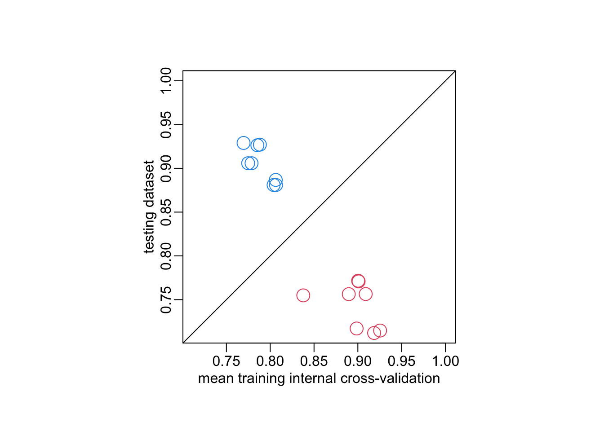
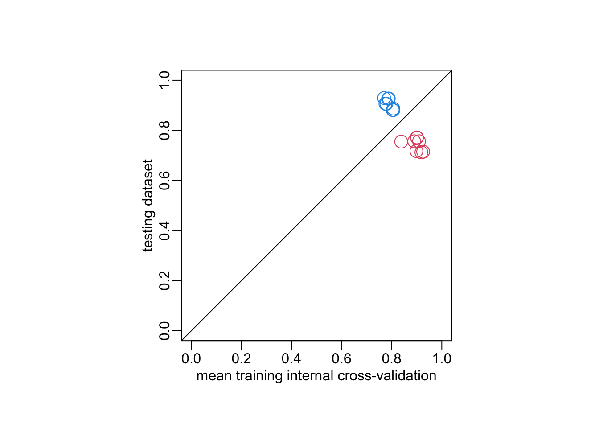
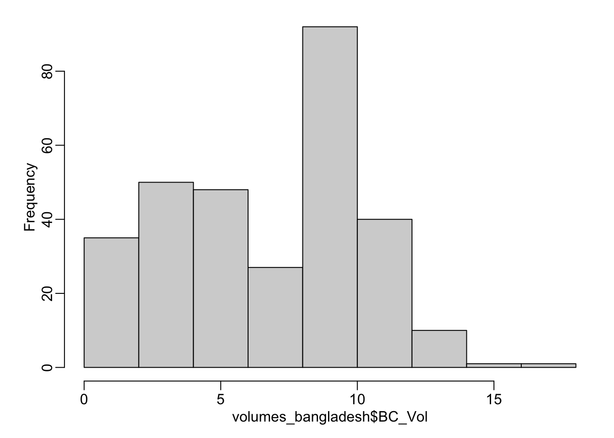
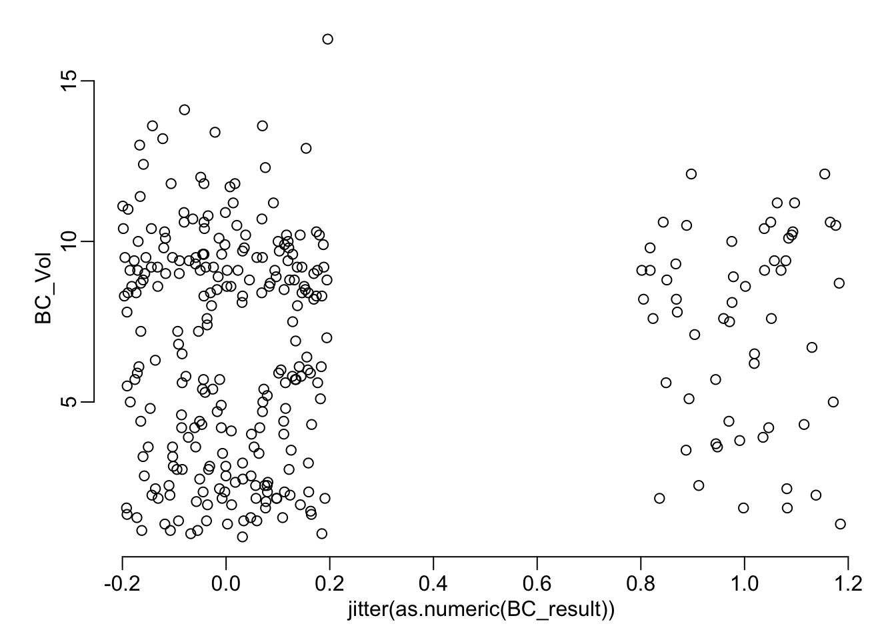
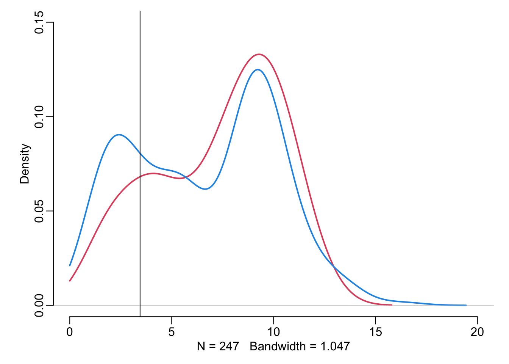
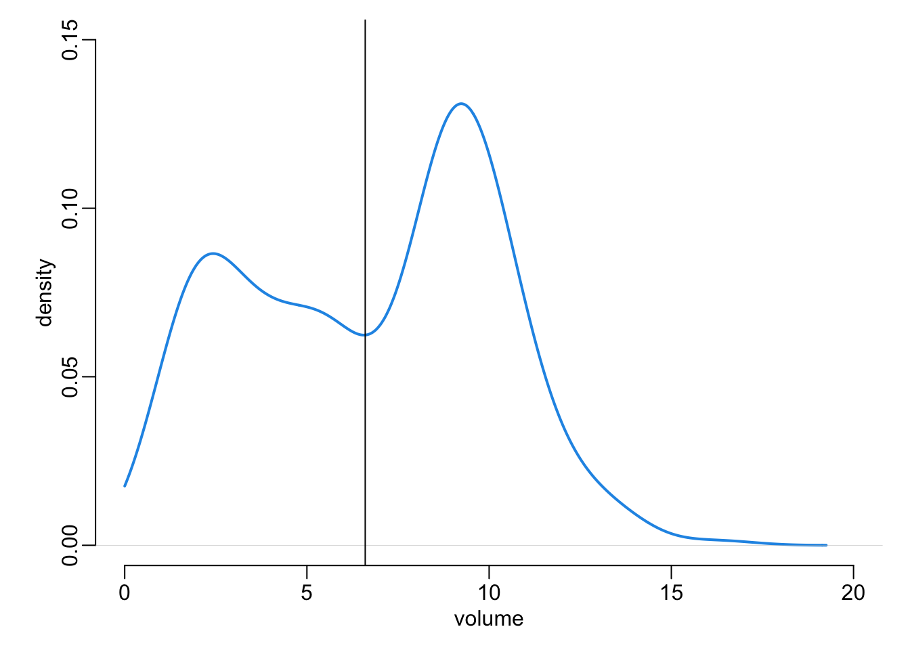
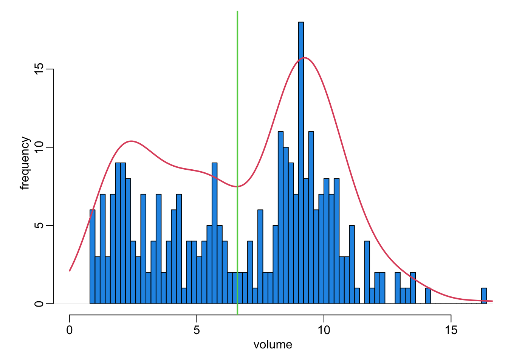
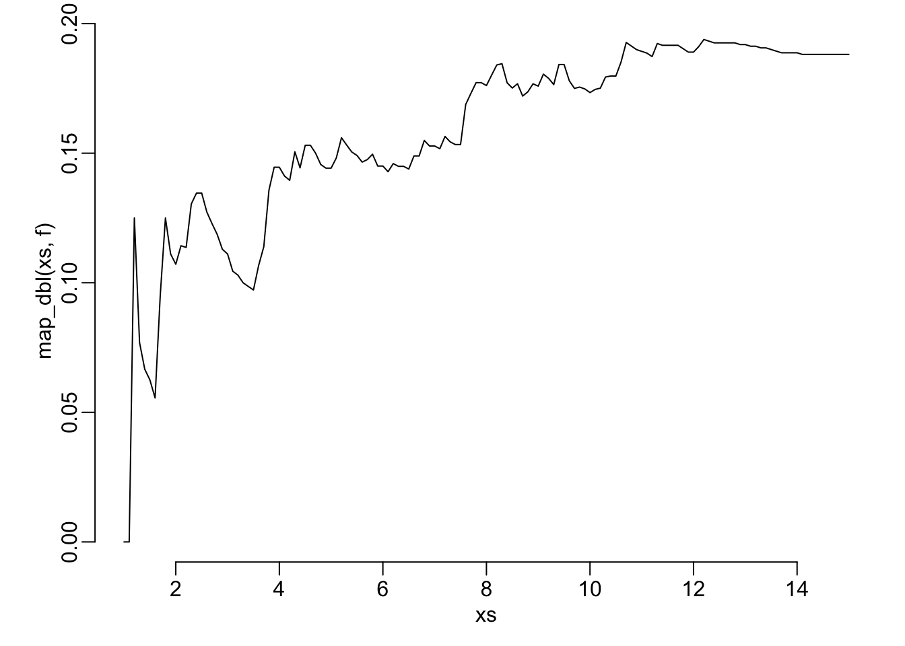
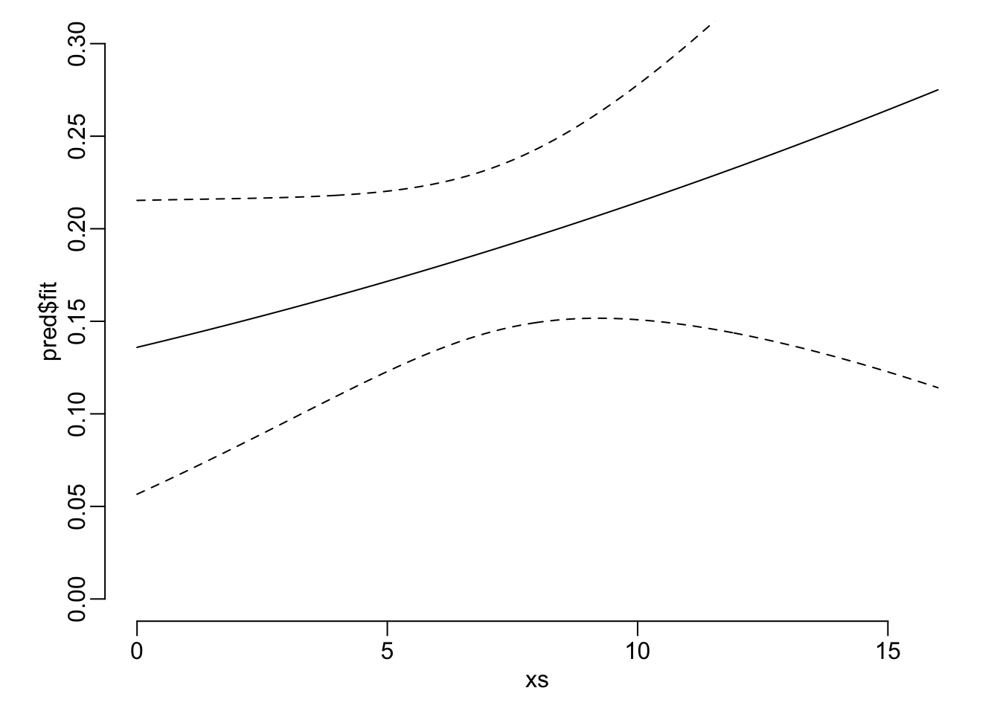
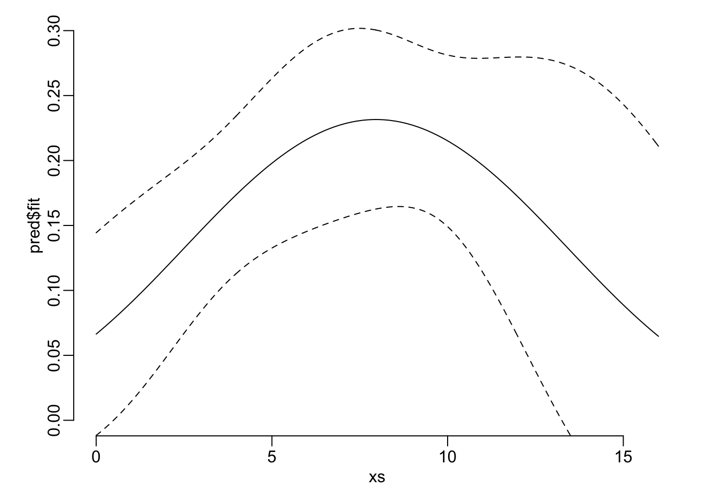

data_path <- paste0(Sys.getenv("HOME"), "/Library/CloudStorage/",
"OneDrive-OxfordUniversityClinicalResearchUnit/",
"GitHub/choisy/typhoid/")Classification workflow
Limitations and suggestions
Limitations:
- Small datasets
- One of the datasets has very low prevalence 6%
- The fever variable is different in the two datasets
- We are trying to predict the result of culture when we do know that it depends on other causes that those in our variables (i.e. the quantity of blood used)
- The durations of symptoms are questionable has it depends on the stage of the disease at which the patient sees the doctor
Suggestions:
- Switch the role of the 2 datasets in terms of training and testing
- Proceed in 2 steps: first build the best possible model that will used as a performance reference. Then build a clinical score and measure its performance by comparing with the best possible model
Global parameters
The path to the data:
Package
Required packages:
required_packages <- c("dplyr", "purrr", "rsample", "recipes", "themis", "parsnip",
"workflows", "yardstick", "tune", "finetune", "dials",
"randomForest")Installing those that are not installed:
to_inst <- required_packages[! required_packages %in% installed.packages()[,"Package"]]
if (length(to_inst)) install.packages(to_inst)Loading some for interactive use:
library(dplyr)
library(purrr)
library(rsample)
library(recipes)
library(themis)
library(parsnip)
library(workflows)
library(yardstick)
library(tune)
library(finetune)
library(dials)Utilitary functions
A function that reads a clean data set:
read_clean_data <- function(file) readRDS(paste0(data_path, "clean_data/", file))A function that transforms a logical vector into a factor vector (with the correct number of levels):
logical2factor <- function(x) factor(x, c("FALSE", "TRUE"))This function builds an rsplit object by combining independent train and test data sets:
make_splits2 <- function(train, test) {
n_train <- nrow(train)
make_splits(list(analysis = seq(n_train),
assessment = n_train + seq(nrow(test))),
bind_rows(train, test))
}Tuning the collect_metrics() function:
collect_metrics2 <- function(...) {
collect_metrics(...) |>
select(-.config, -.estimator)
}Tuning the last_fit() function:
last_fit2 <- function(wf, split, metrics) {
# the external validation:
external <- wf |>
last_fit(split, metrics = metrics) |>
collect_metrics2() |>
select(-.metric)
# the internal cross-validation:
wf |>
fit_resamples(vfold_cv(training(split)), metrics = metrics) |>
collect_metrics2() |>
bind_cols(external) # to which we stick the external one.
}Reading the clean data
The Nepal dataset:
nepal <- "nepal.rds" |>
read_clean_data() |>
mutate(across(c(cough, diarrhea, vomiting, abdominal_pain, constipation, headache),
as.logical),
across(c(age, platelets), as.numeric),
across(fever, ~ .x > 2),
across(where(is.logical), logical2factor)) |>
select(-starts_with("score")) |>
select(-fever) |>
na.exclude()The Cambodia and Bangladesh dataset:
cambodia_bangladesh <- "cambodia_bangladesh.rds" |>
read_clean_data() |>
mutate(across(fever, ~ .x > 2),
across(where(is.logical), logical2factor)) |>
select(-country) |>
select(-fever) |>
na.exclude()Checking the consistency of the levels of the factors between the two datasets:
get_levels <- function(x) x |>
select(sex, IgM, CRP) |>
map(levels)
identical(get_levels(nepal), get_levels(cambodia_bangladesh))[1] TRUErm(get_levels)The metric
We use the ROC AUC to measure the performance of the models:
the_metric <- metric_set(roc_auc)The data splits
Let’s consider the two of the two data sets:
# train on Cambodia and Bangladesh and test on Nepal:
splits1 <- make_splits2(cambodia_bangladesh, nepal)
# train on Nepal and test on Cambodia and Bangladesh:
splits2 <- make_splits2(nepal, cambodia_bangladesh)The models
Let’s consider 5 types of models:
logistic_regression <- logistic_reg("classification", "glm")
logistic_regression_lasso <- logistic_reg("classification", "glmnet",
penalty = tune())
logistic_regression_elasticnet <- logistic_reg("classification", "glmnet",
penalty = tune(), mixture = tune())
random_forest <- rand_forest("classification", "randomForest")
random_forest_tuned <- rand_forest("classification", "randomForest",
mtry = tune(), trees = tune(), min_n = tune())Functions to tune workflow
The function that builds a workflow without tuning:
workflow_no_tune <- function(model, splits) {
recipe(culture ~ ., training(splits)) |>
step_unorder(all_ordered_predictors()) |> # adding this
step_dummy(all_factor_predictors()) |>
step_smotenc(culture) |>
workflow(model)
}The function that builds a workflow and tune it:
workflow_tune <- function(model, split, size = 25, metric = the_metric,
mtry_range = c(1, 10)) {
check_mtry <- function(x) {
if (x$component[1] == "rand_forest") {
if (any(map_chr(x$object[[1]]$range, class) == "call")) {
return(update(x, mtry = mtry(mtry_range)))
}
}
x
}
select_best2 <- function(...)
select_best(..., metric = names(attributes(metric)$metrics))
wkflw <- workflow_no_tune(model, split)
grid <- wkflw |>
extract_parameter_set_dials() |>
check_mtry() |>
grid_space_filling(size = size)
resamples <- vfold_cv(training(split))
grid_search <- tune_grid(wkflw, resamples = resamples, grid = grid, metrics = metric)
iterative_search <- safely(tune_bayes)(wkflw, resamples = resamples,
initial = grid_search, metrics = metric)
output <- list(grid_search = finalize_workflow(wkflw, select_best2(grid_search)))
if (is.null(iterative_search$result)) return(output)
output$iterative_search <- finalize_workflow(wkflw,
select_best2(iterative_search$result))
output
}Wrappers around the above 2 functions to build and possibly tune several models at once:
workflows_tune <- function(models, split, size = 25, metric = the_metric,
mtry_range = c(1, 10)) {
models |>
map(workflow_tune, split, size, metric, mtry_range) |>
unlist(FALSE) |>
unname()
}and:
workflows_no_tune <- function(models, splits) map(models, workflow_no_tune, splits)Models comparisons
Making all the workflows:
make_workflows <- function(splits) {
non_tuned_workflows <- workflows_no_tune(list(logistic_regression, random_forest),
splits)
tuned_workflows <- workflows_tune(list(logistic_regression_elasticnet,
logistic_regression_lasso, random_forest_tuned),
splits)
unlist(list(non_tuned_workflows, tuned_workflows), FALSE)
}Takes 9’42”:
workflows <- map(list(splits1, splits2), make_workflows)Takes 67”:
workflows_performances <- map2(workflows, list(splits1, splits2),
~ map(.x, last_fit2, .y, the_metric)) |> bind_rows()tibble(
train = rep(c("CamBan", "Nepal"), each = 8),
model = rep(c("LR", "RF", rep(c("LS_EN", "LR_lasso", "RF_tuned"), each = 2)), 2),
search = rep(c(rep(NA, 2), rep(c("grid", "iter"), 3)), 2)) |>
bind_cols(workflows_performances)# A tibble: 16 × 8
train model search .metric mean n std_err .estimate
<chr> <chr> <chr> <chr> <dbl> <int> <dbl> <dbl>
1 CamBan LR <NA> roc_auc 0.838 10 0.0534 0.755
2 CamBan RF <NA> roc_auc 0.899 10 0.0222 0.717
3 CamBan LS_EN grid roc_auc 0.909 10 0.0284 0.756
4 CamBan LS_EN iter roc_auc 0.890 10 0.0258 0.756
5 CamBan LR_lasso grid roc_auc 0.901 10 0.0172 0.771
6 CamBan LR_lasso iter roc_auc 0.900 10 0.0215 0.772
7 CamBan RF_tuned grid roc_auc 0.925 9 0.0170 0.715
8 CamBan RF_tuned iter roc_auc 0.919 9 0.0169 0.712
9 Nepal LR <NA> roc_auc 0.770 10 0.0263 0.929
10 Nepal RF <NA> roc_auc 0.806 10 0.0180 0.887
11 Nepal LS_EN grid roc_auc 0.788 10 0.0240 0.927
12 Nepal LS_EN iter roc_auc 0.785 10 0.0182 0.926
13 Nepal LR_lasso grid roc_auc 0.779 10 0.0187 0.906
14 Nepal LR_lasso iter roc_auc 0.775 10 0.0148 0.906
15 Nepal RF_tuned grid roc_auc 0.804 10 0.0179 0.881
16 Nepal RF_tuned iter roc_auc 0.807 10 0.0123 0.881opar <- par(pty = "s")
with(workflows_performances, {
min_val <- min(mean, .estimate)
plot(mean, .estimate, col = rep(c(2, 4), each = 8), cex = 2,
xlim = c(min_val, 1), ylim = c(min_val, 1),
xlab = "mean training internal cross-validation", ylab = "testing dataset")
})
abline(0, 1)
box(bty = "o")
par(opar)opar <- par(pty = "s")
with(workflows_performances,
plot(mean, .estimate, col = rep(c(2, 4), each = 8), cex = 2,
xlim = 0:1, ylim = 0:1,
xlab = "mean training internal cross-validation", ylab = "testing dataset"))
abline(0, 1)
box(bty = "o")
par(opar)Blood volume
volumes_bangladesh <- readxl::read_excel(paste0(data_path,
"raw_data/bangladesh_BC_volumes.xlsx")) |>
select(BC_Vol, BC_result) |>
mutate(across(BC_result, ~ .x == "Pos"))
volumes_cambodia <- readxl::read_excel(paste0(data_path,
"raw_data/cambodia_BC_volumes.xlsx"))hist(volumes_bangladesh$BC_Vol)
table(volumes_bangladesh$BC_result)
FALSE TRUE
247 57 with(volumes_bangladesh, plot(jitter(as.numeric(BC_result)), BC_Vol))
volumes_bangladesh |>
filter(BC_result) |>
pull(BC_Vol) |>
density(from = 0) |>
plot(xlim = c(0, 20), ylim = c(0, .15), main = NA, axes = FALSE, ann = FALSE,
col = 2, lwd = 2)
par(new = TRUE)
volumes_bangladesh |>
filter(! BC_result) |>
pull(BC_Vol) |>
density(from = 0) |>
plot(xlim = c(0, 20), ylim = c(0, .15), col = 4, lwd = 2, main = NA)
abline(v = 3.45)
volumes_bangladesh |>
pull(BC_Vol) |>
na.exclude() |>
density(from = 0) |>
plot(xlim = c(0, 20), ylim = c(0, .15), col = 4, lwd = 2, main = NA,
xlab = "volume", ylab = "density")
abline(v = 6.6)
volumes_bangladesh |>
pull(BC_Vol) |>
na.exclude() |>
hist(n = 100, xlim = c(0, 16), col = 4, xlab = "volume", ylab = "frequency", main = NA)
par(new = TRUE)
volumes_bangladesh |>
pull(BC_Vol) |>
na.exclude() |>
density(from = 0) |>
plot(xlim = c(0, 16), ylim = c(0, .15), col = 2, lwd = 2, main = NA,
xlab = "volume", ylab = "density", axes = FALSE, ann = FALSE)
abline(v = 6.6, col = 3, lwd = 2)
rpart::rpart(BC_result ~ BC_Vol, volumes_bangladesh)n=304 (40 observations deleted due to missingness)
node), split, n, deviance, yval
* denotes terminal node
1) root 304 46.312500 0.18750000
2) BC_Vol< 3.45 72 6.319444 0.09722222 *
3) BC_Vol>=3.45 232 39.224140 0.21551720
6) BC_Vol>=3.95 221 35.837100 0.20361990
12) BC_Vol>=12.2 10 0.000000 0.00000000 *
13) BC_Vol< 12.2 211 35.402840 0.21327010
26) BC_Vol< 10.2 174 26.741380 0.18965520
52) BC_Vol>=8.25 92 11.869570 0.15217390 *
53) BC_Vol< 8.25 82 14.597560 0.23170730
106) BC_Vol< 7.5 68 9.220588 0.16176470 *
107) BC_Vol>=7.5 14 3.428571 0.57142860 *
27) BC_Vol>=10.2 37 8.108108 0.32432430
54) BC_Vol>=10.6 22 3.863636 0.22727270 *
55) BC_Vol< 10.6 15 3.733333 0.46666670 *
7) BC_Vol< 3.95 11 2.727273 0.45454550 *f <- function(x) {
volumes_bangladesh |>
filter(BC_Vol < x) |>
pull(BC_result) |>
mean()
}
xs <- seq(1, 15, .1)
plot(xs, map_dbl(xs, f), type = "l")
volumes_bangladesh |>
arrange(BC_Vol)# A tibble: 344 × 2
BC_Vol BC_result
<dbl> <lgl>
1 0.800 FALSE
2 0.900 FALSE
3 0.900 FALSE
4 1 FALSE
5 1 FALSE
6 1 FALSE
7 1.20 FALSE
8 1.20 TRUE
9 1.20 FALSE
10 1.30 FALSE
# ℹ 334 more rowsmod <- glm(BC_result ~ BC_Vol, binomial, volumes_bangladesh)
xs <- seq(0, 16, le = 512)
pred <- predict(mod, data.frame(BC_Vol = xs), type = "response", se = TRUE)
plot(xs, pred$fit, type = "l", ylim = c(0, .3))
lines(xs, pred$fit - 1.96 * pred$se.fit, lty = 2)
lines(xs, pred$fit + 1.96 * pred$se.fit, lty = 2)
library(mgcv)Loading required package: nlme
Attaching package: 'nlme'The following object is masked from 'package:dplyr':
collapseThis is mgcv 1.9-3. For overview type 'help("mgcv-package")'.mod_gam <- mgcv::gam(BC_result ~ s(BC_Vol), binomial, volumes_bangladesh, method = "REML")
pred_gam <- predict(mod_gam, data.frame(BC_Vol = xs), type = "response", se = TRUE)
plot(xs, pred_gam$fit, type = "n", ylim = c(0, .32), xlab = "volume",
ylab = "probability of positive culture")
polygon(c(xs, rev(xs)),
c(pred_gam$fit - 1.96 * pred$se.fit, rev(pred_gam$fit + 1.96 * pred$se.fit)),
border = NA, col = adjustcolor(4, .2))
lines(xs, pred_gam$fit, col = 4, lwd = 2)
abline(v = 6.6, lwd = 2, col = 3)